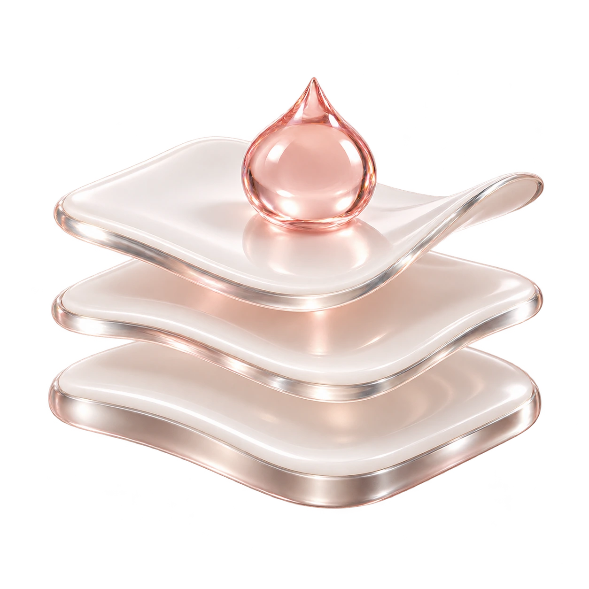
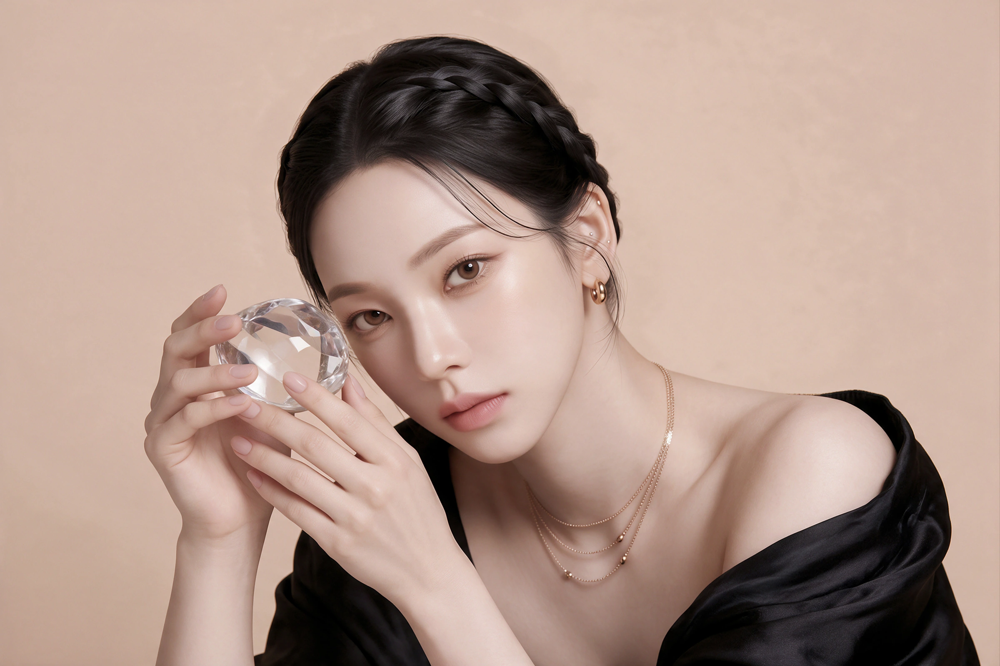
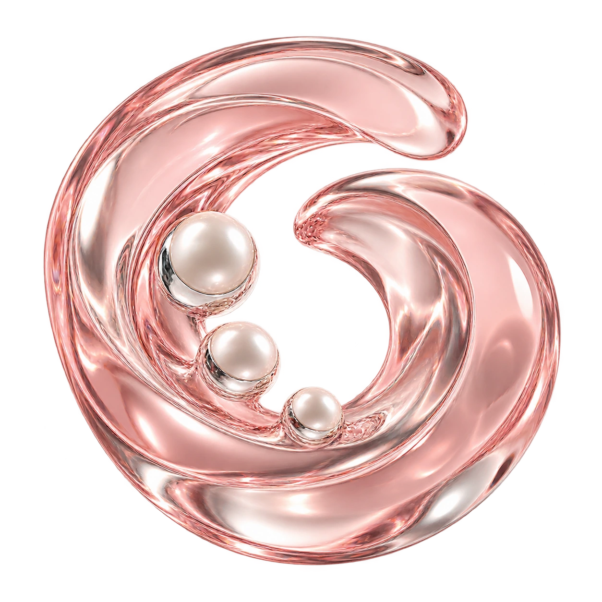
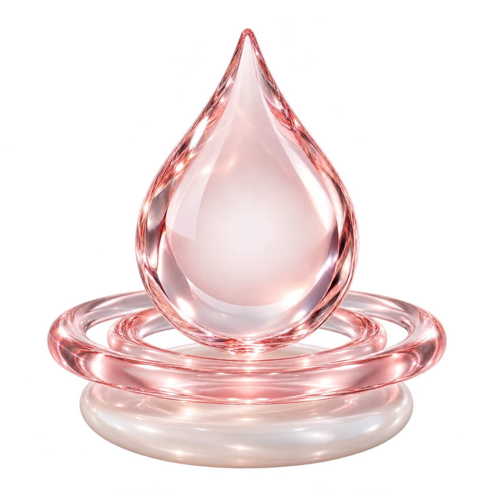

거칠게 느껴지는 피부결
각질이 들뜨거나 메이크업이
고르게 밀착되지 않을 때.

Fresh skin.Fresh start.
피부 표면부터 모공까지 차근차근.
오늘의 피부 상태에 맞춰 관리합니다.
Cleanse.Refresh.
아쿠아필은 솔루션과 흡입을 이용해
각질·피지·노폐물을 정리하고,
수분 케어로 마무리하는 관리입니다.
피부가 거칠게 느껴질 때,
번들거림과 건조함이 함께 고민될 때.
피부 상태를 먼저 살피고
필요한 케어를 계획합니다.

겉으로 보이는 고민부터 피부의 민감도까지.
지금 내 피부에 필요한 관리의 출발점입니다.

각질이 들뜨거나 메이크업이
고르게 밀착되지 않을 때.

피지가 쌓이기 쉬운 부위와
모공 주변이 신경 쓰일 때.

노폐물을 정리하면서
피부의 보습도 챙기고 싶을 때.
Three steps.
단계별 역할을 따라 살펴보세요.
관리 방법은 피부 상태에 맞춰 조절합니다.
STEP 01 · AHA 단계
Exfoliate.
피부 표면에 쌓인 각질과 노폐물을 정리하는 단계입니다. 거칠게 느껴지는 피부결을 살피고, 피부 상태에 맞춰 관리합니다.
각질·피부결 상태 확인STEP 02 · BHA 단계
Cleanse.
피지가 쌓이기 쉬운 부위와 블랙헤드 고민을 확인합니다. 솔루션과 흡입을 이용한 케어로 피부 표면과 모공 주변의 노폐물을 정리합니다.
부위별 피지·민감도 고려STEP 03 · 보습 단계
Hydrate.
각질·피지 관리 후 피부 상태에 맞춰 보습과 마무리 케어를 진행합니다. 자극받은 피부를 세심하게 살피고 관리 후 주의사항을 안내합니다.
보습·마무리 관리관리의 세기는 피부 상태를 보며 결정합니다.
강하게 반복하기보다 필요한 만큼 세심하게.
피지·각질뿐 아니라 건조함과 민감도,
최근 피부 반응을 함께 살핍니다.
부위마다 다른 상태를 고려해
관리 범위와 구성을 조절합니다.
관리 후 반응을 확인하고
보습과 일상 관리 방법을 안내합니다.
A little care.
작은 습관까지 세심하게.
개인의 피부 상태에 따른 안내를 따라주세요.
최근 필링·레이저 시술, 레티놀·각질 제거 제품 사용, 알레르기와 피부 질환을 알려주세요.
보습과 자외선 차단을 챙기고, 피부가 예민할 때는 강한 문지름이나 추가 각질 제거를 피하세요.
일시적인 붉어짐이나 따끔거림이 생길 수 있습니다. 증상이 심하거나 지속되면 의료진에게 문의하세요.
솔루션과 흡입을 이용해 피부 표면의 각질·피지·노폐물을 정리하고 보습으로 마무리하는 피부 관리입니다. 피부 상태와 고민에 따라 관리 범위와 구성을 조절합니다.
블랙헤드, 과도한 피지, 거친 피부결, 건조함 등이 고민일 때 상담할 수 있습니다. 염증이나 피부 질환이 있다면 관리보다 진료가 먼저 필요할 수 있습니다.
AHA 단계는 피부 표면의 각질 정리, BHA 단계는 피지와 모공 주변 케어를 중심으로 안내합니다. 사용하는 제품과 농도, 적용 범위는 피부 상태를 확인한 뒤 결정합니다.
민감도와 피부 장벽 상태를 먼저 확인해야 합니다. 상처, 심한 붉어짐, 일광화상이나 자극 증상이 있다면 관리를 미루거나 방법을 바꿀 수 있습니다. 상담 시 최근 피부 반응을 알려주세요.
흡입감이나 따끔거림을 느낄 수 있으며 개인차가 있습니다. 불편함이 느껴지면 바로 알려주세요. 피부 반응을 확인하며 진행합니다.
상담, 관리 구성과 피부 반응에 따라 달라집니다. 일정에 필요한 예상 시간은 예약 시 안내받고, 반복 관리는 피부 상태와 회복 정도를 확인한 뒤 정합니다.
노폐물 관리에 도움을 줄 수 있지만 한 번의 관리로 모든 블랙헤드가 사라지거나 모공 크기가 영구적으로 줄어드는 것은 아닙니다. 고민의 원인에 맞는 관리 계획을 상담해 주세요.
최근 필링·레이저 시술과 레티놀·각질 제거 제품 사용 이력을 알려주세요. 관리 후에는 보습과 자외선 차단을 챙기고, 피부가 예민할 때는 강한 문지름이나 추가 각질 제거를 피하세요. 불편한 증상이 지속되면 의료진에게 문의하세요.
서울 마포구 양화로 66, 메디원메디컬센터 6층·8층에 위치합니다. 접수는 6층이며 합정역 3번 출구 인근입니다. 아래에서 위치와 진료시간을 확인하고 상담을 예약할 수 있습니다.
산뜻한 피부 관리의 시작,
내 피부부터 알아보세요.
나에게 맞는 이벤트를 펼쳐보세요.
Beauty, with care.
피부 상태와 원하는 변화를 세심하게 살피고,
정품·정량과 충분한 설명을 진료의 기본으로 생각합니다.

피부 상태와 일상, 원하는 변화를
함께 살펴 나에게 맞는 진료 계획을 세웁니다.

정품 사용과 정량 원칙을
진료의 기본으로 생각합니다.

개개인의 자연스러운 아름다움을 존중하며,
시술 과정과 관리 방법을 충분히 설명합니다.
Find us.
평일 10:00–20:00
주말·대체공휴일 10:00–16:30
점심시간 없이 진료 · 공휴일 진료는 문의
평일 10:00–20:00
주말·대체공휴일 10:00–16:30
점심시간 없이 진료 · 공휴일 진료는 문의